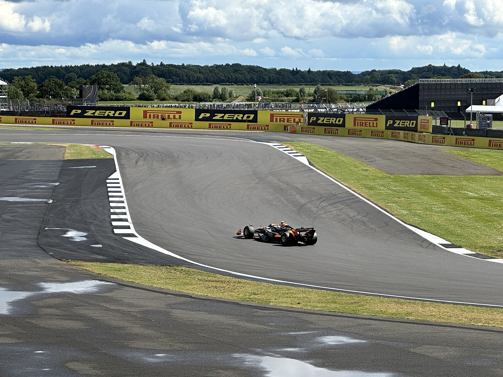

Lando Norris
United Kingdom · McLaren · Car #1 · Team mate: Oscar Piastri

Early Career
Norris grew up in Bristol and began karting aged seven. He won the FIA Formula 3 European Championship and finished second in Formula 2 before McLaren promoted him straight to F1.
McLaren's young driver programme backed him through the junior categories. His personality and sim-racing background made him popular with fans long before his first podium.
Career Highlights
He joined McLaren in 2019 alongside Carlos Sainz. Early seasons were difficult as the car lacked pace, but Norris steadily improved and took his first podium at Imola in 2020.
The team's revival under Andrea Stella brought regular podiums and his first win in 2021 at Russia. By 2024–2025 McLaren had the fastest car, and Norris fought Verstappen for the title.
He became world champion entering 2026, carrying the #1 plate as McLaren's first title winner since Lewis Hamilton in 2008.
2026 Season
Norris leads McLaren's title defence with Oscar Piastri as team mate — a pairing that pushes each other hard while McLaren targets the constructors' crown again.
The 2026 regulation reset could compress the field, but McLaren's aerodynamic understanding under Stella gives them a strong foundation.
Norris must balance aggression with consistency — the mistakes that cost him points in 2024 were largely eliminated in his championship-winning campaign.
Driving Style & Legacy
Norris blends strong race pace with popular appeal across social media and streaming. He is the face of McLaren's modern revival and one of the sport's biggest global stars.